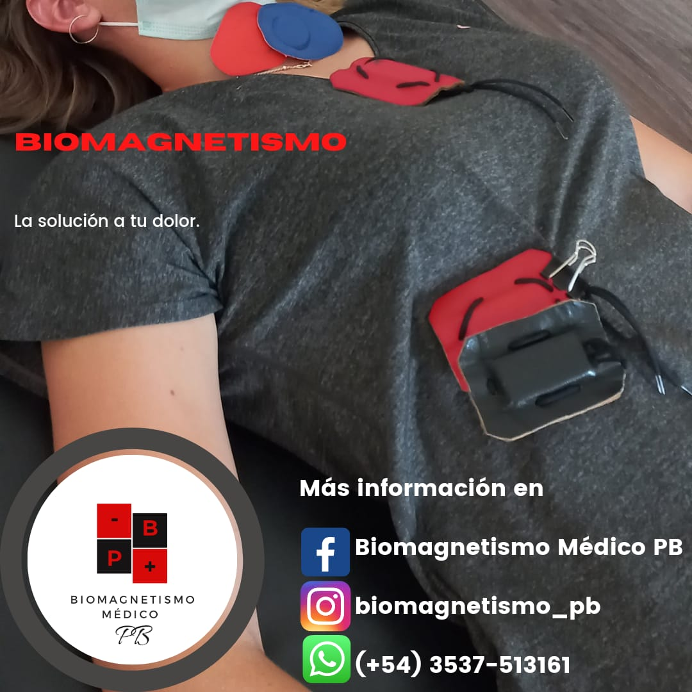

El biomagnetismo médico es una terapia alternativa que se basa en el uso de imanes para equilibrar el pH del cuerpo y eliminar patógenos.
Esta técnica se fundamenta en la teoría de que muchas enfermedades son causadas por desequilibrios en el pH y la presencia de virus, bacterias, hongos y parásitos en el organismo.
Los beneficios del biomagnetismo son diversos. Esta terapia puede ayudar a:
Restablecer el equilibrio del pH en el cuerpo, lo que favorece un ambiente menos propenso para el desarrollo de enfermedades.
Combatir infecciones causadas por patógenos, mejorando la salud y el bienestar general.
Aliviar el dolor y la inflamación, ya que el biomagnetismo puede contribuir a reducir la respuesta inflamatoria del organismo.
Fortalecer el sistema inmunológico, permitiendo al cuerpo defenderse de manera más efectiva contra enfermedades.
Mejorar la energía y vitalidad, ayudando a las personas a sentirse más enérgicas y menos fatigadas.
Complementar otras terapias médicas y promover la salud integral.
Biomagnetismo Médico es una técnica no invasiva y libre de efectos secundarios perjudiciales, lo que la hace atractiva para aquellos que buscan opciones de tratamiento naturales.
Si deseas obtener más información o experimentar los beneficios del biomagnetismo, no dudes en ponerte en contacto con nosotros.
Estamos comprometidos a ayudarte a alcanzar un mejor estado de salud y bienestar.
